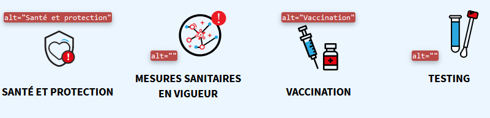
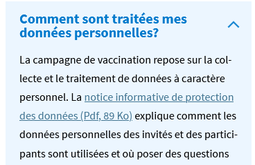
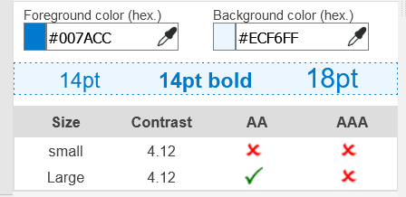
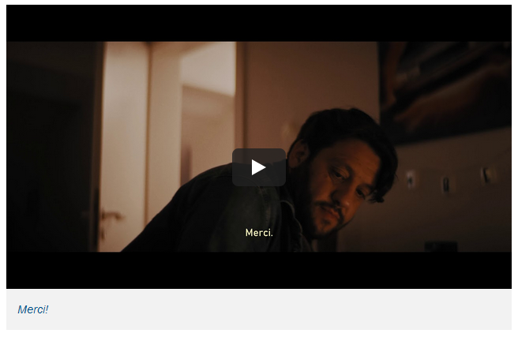
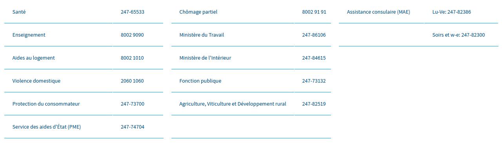
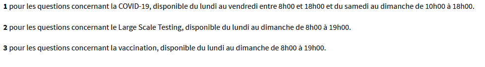
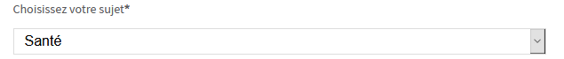

Audit d'accessibilité simplifié
Fiche signalétique
Site : covid19.public.lu
Date de l’évaluation : 2 mars 2021
Échantillon de pages :
Méthode d'évaluation : Méthode de contrôle simplifiée de l’accessibilité pour le Luxembourg – v1.2
Référentiel : RGAA v4
Avertissement
Attention, l’audit effectué est un audit simplifié et non un audit de conformité (ou audit "complet"). Il a vocation à détecter une série de problèmes d’accessibilité mais n'est pas exhaustif. Le fait qu’aucun problème ne soit remonté pour un critère RGAA donné ne signifie pas qu’il n’y a pas de problème d’accessibilité pour ce critère. De même, lorsque nous rapportons une occurrence d’un problème, ce problème peut avoir d’autres occurrences. N’hésitez pas à vérifier de manière exhaustive l’accessibilité de votre site conformément au référentiel RGAA v4.
Appréciation générale
Résumé
Niveau d’accessibilité global pour les critères testés : bon.
Ce site a un bon niveau d’accessibilité global. Nous avons détecté quelques problèmes d’accessibilité qui concernent à la fois les rédacteurs et les développeurs du site. Une attention particulière devra être portée aux contenus vidéos ainsi qu’aux documents bureautiques en téléchargement.
Quantité de contenus dérogés
La loi luxembourgeoise prévoit que certains contenus soient exemptés de l’obligation d’accessibilité. Si trop de contenus dérogés sont présents sur le site, cela peut biaiser les résultats de cet audit. Nous n’avons pas relevé beaucoup de contenus dérogés.
Contenus dérogés potentiels : vidéos publiées avant le 23 septembre 2020, cartes interactives.
Quantité et nature des documents bureautiques en téléchargement
La quantité et la nature des documents bureautiques en téléchargement peut impacter la pertinence de cet audit. En effet, plus il y a de documents bureautiques en téléchargement, plus il y a de chances que les utilisateurs handicapés n’accèdent pas à l’information.
Nous avons détecté sur ce site 100 documents PDF en téléchargement créés après le 23 septembre 2018 (ils ne sont donc pas exemptés de l’obligation d’accessibilité). Parmi ces documents, 53 ne sont pas taggués (« Tagged PDF »), ils sont donc inaccessibles. Nous n’avons cependant pas pu vérifier si une alternative accessible à ces fichiers serait présente sur le site.
Annexe technique
Images
Donner à chaque image porteuse d’information une alternative textuelle pertinente et une description détaillée si nécessaire. Lier les légendes à leurs images. Remplacer les images textes par du texte stylé lorsque c’est possible.
Images de décoration
Les images de décoration doivent être correctement ignorées par les technologies d’assistance. Dans le cas contraire, des informations qui peuvent nuire à la compréhension du site peuvent être lues par les lecteurs d’écrans aux personnes aveugles.
Constats sur le site
Toutes les pages : dans le menu de navigation, les images décoratives pour "Santé et protection" et "vaccination" ont un attribut alt non vide, celui-ci doit être vide.

Page 1 : Les images en SVG dans la colonne de droite comme "inscrivez-vous à la réserve sanitaire" ne sont pas correctement ignorées par les technologies d'assistance. Présence nécessaire de l'attribut aria-hidden="true".
Page 3 : en bas de page, les images SVG décoratives pour "personnes vulnérables", "testing" et "mesures sanitaires en vigueur" ne sont pas correctement ignorées par les technologies d'assistance. Présence nécessaire de l'attribut aria-hidden="true".
Couleurs
Ne pas donner l’information uniquement par la couleur et utiliser des contrastes de couleurs suffisamment élevés pour les textes, les composants d’interface ou les éléments porteurs d’informations.
Contrastes
Les contrastes de couleurs sont importants pour plusieurs déficiences visuelles comme les grands malvoyants ou les personnes ayant des problèmes de perception des couleurs.
Les contrastes minimaux d’un texte sur le fond de page sont définis par le RGAA comme suit :
Pour un texte sans effet de graisse
De taille inférieure à 24 px : le contraste minimum est de 4.5 :1 ;
De taille supérieure ou égale à 24 px : le contraste minimum est de 3 :1.
Pour un texte en gras
De taille inférieure à 18.5 px : le contraste minimum est de 4.5 :1 ;
De taille supérieure à 18.5 px : le contraste minimum est de 3 :1.
Pour vérifier les contrastes, on peut utiliser un outil tel que « Colour Contrast Analyser »
Constats sur le site
Toutes les pages : le contraste des liens d'évitement sur le fond est insuffisant avec 3.92:1. Ce contraste doit être de 4.5:1.
Page 3 : le contraste du lien "notice informative de protection des données (pdf, 89ko)" n'est pas suffisamment contrasté sur son arrière-plan. Il a un contraste de 4.12:1 au lieu de 4.5:1 
Multimédia
Donner à chaque média temporel audio et/ou vidéo une transcription textuelle, des sous-titres ou une audio-description pertinents lorsque cela est nécessaire. Donner à chaque contenu graphique ou interactif (ou média non temporel) une alternative textuelle pertinente. Rendre possible le contrôle de leur consultation et leur manipulation au clavier et avec tout dispositif de pointage comme la souris. S’assurer de leur compatibilité avec les technologies d’assistance.
Transcription textuelle et audiodescription des vidéos
La transcription textuelle fournit une alternative textuelle contenus vidéo. L’audiodescription est une bande sonore alternative à la bande son principale, dans laquelle toutes les informations nécessaires à la compréhension sont détaillées.
L’absence de transcription et d’audiodescription impacte donc les sourds, malentendants, aveugles, mais aussi les handicapés moteurs qui peuvent avoir des problèmes à utiliser un lecteur vidéo et préfèrent lire la transcription. Il est nécessaire de fournir une transcription textuelle ou une audiodescription.
Constats sur le site
Page 1 : la vidéo "merci" n'a pas de transcription textuelle ni d'audio description

Sous-titrage des vidéos
Les sous-titres permettent aux personnes sourdes et malentendantes de comprendre ce qui est dit dans une vidéo. Cependant pour être conformes, ces sous-titres ne doivent pas être incrustés dans la vidéo. Ils doivent pouvoir être activables et désactivables, et il doit être possible de changer la taille du texte, ce qui n’est pas possible avec des sous-titres incrustés.
Constats sur le site
Page 1 : des sous-titres sont présents sur la vidéo « merci », cependant ceux-ci sont incrustés dans la vidéo.
Tableaux
Associer correctement les tableaux de données à leur titre, donner à chaque tableau de données complexe, un résumé, identifier clairement les cellules d’en-tête, utiliser un mécanisme pertinent pour lier les cellules de données aux cellules d’en-tête. Pour chaque tableau de mise en forme, veiller à sa bonne linéarisation.
Tableaux de mise en forme
Des tableaux peuvent être utilisés non pas pour présenter des données mais pour mettre en forme des contenus. Dans ce cas, le contenu linéarisé doit rester compréhensible (contenu lu ligne par ligne) et la balise <table> doit avoir l’attribut role=presentation. En effet, les tableaux de données sont annoncés comme tels aux utilisateurs aveugles et leur permettent des modes de navigation spécifiques. Sur un tableau de mise en forme, les données seront simplement lues lignes par lignes sans annonce d’un tableau.
Constats sur le site
Page 2 : une liste de numéros de téléphone est réalisée à l’aide de tableaux. Ces tableaux n’ont pas de rôle presentation.

Scripts
Donner si nécessaire à chaque script une alternative pertinente. Avertir ou permettre le contrôle des scripts qui initient un changement de contexte. Rendre possible le contrôle de chaque code script au moins par le clavier et par tout dispositif de pointage et s’assurer de leur compatibilité avec les technologies d’assistance notamment pour les messages de statut.
Éléments non visibles mais focusables au clavier
Les personnes handicapées moteur peuvent naviguer uniquement au clavier. Dans ce cas, elles se déplacent d’élément interactif en élément interactif et le focus sur l’élément courant doit être visible pour que ces personnes puissent se repérer dans la page et activer le bon bouton ou le bon lien. Si le focus se déplace sur des éléments non visibles, ceci peut être très déroutant pour ces utilisateurs.
Constats sur le site :
Page 1 : sur desktop, lorsque le formulaire de recherche est fermé, les éléments de ce formulaire (champ texte et bouton) sont toujours focusables au clavier.
Éléments obligatoires
Vérifier que dans chaque page Web, le code source généré respecte les règles d’écriture correspondant au type de document, que le titre est pertinent et la langue par défaut, indiquée. Vérifier que les balises ne sont pas utilisées uniquement à des fins de présentation, que les changements de langues et de direction de sens de lecture sont indiqués.
Validité du code HTML
Les lecteurs d’écran s’appuient sur la sémantique des balises HTML pour restituer le contenu et naviguer, si la syntaxe HTML n’est pas respectée ou si les balises sont détournées, cela peut avoir un impact sur la navigation qui peut devenir inopérante et la restitution qui peut devenir incompréhensible.
Pour vérifier la validité de la syntaxe HTML, on peut utiliser le validateur W3C avec le bookmarklet « Check for WCAG 2.0 parsing compliance » disponible sur la page « about » du validateur. Ce bookmarklet filtre les résultats et ne montre que les erreurs ayant un impact sur l’accessibilité.
Constats sur le site
Page 1 : La valeur d’attribut ARIA est invalide : aria-labelledby="Pour en savoir plus" sur l'élément aside. Le code HTML de la page n'est pas valide : un identifiant dupliqué "Layer_1"
Page 3 : La valeur d’attribut ARIA est invalide : aria-labelledby="Pour en savoir plus" sur l'élément aside. Le code html de la page n'est pas valide, un élément figcaption est enfant d'un a, mais ceci n'est pas autorisé.
Identification des changements de langue dans la page
Les lecteurs d’écran utilisent l'indication de langue pour vocaliser correctement le contenu. Lorsqu'un mot d'origine étrangère est inséré dans le contenu, il doit posséder, si nécessaire, une indication de langue. L'indication de langue se fait par l'intermédiaire de l'attribut lang.
Il existe néanmoins des exceptions :
Lorsqu'il s'agit d'un nom, l'indication de langue doit être faire uniquement quand le nom doit se prononcer dans sa langue d'origine ;
Lorsqu'il s’agit d'un mot d'origine étrangère, présent dans le dictionnaire de la langue principale de la page, l'indication de langue ne doit pas être faite ;
Lorsqu'il s'agit d'un mot d'origine étrangère d'usage courant, mais absent du dictionnaire, l'indication de langue doit être faite uniquement si la prononciation en français est problématique.
Constats sur le site
Page 1 : Sur la page en français, certains mots en anglais ne sont pas signalés par un changement de langue. Ex: « Toolbox », « hotlines ». Ces mots ne sont pas dans le dictionnaire français, ils nécessitent donc un changement de langue.
Page 2 : Des mots ou expressions tels que "large scale testing" ou "helpline" doivent avoir un changement de langue signalé.
Structuration de l’information
Utiliser des titres, des listes, et des citations pour structurer l’information. S’assurer que la structure du document est cohérente.
Structuration des pages : titres et listes
Les titres et les listes permettent aux aveugles et grands malvoyants de comprendre la structure de la page. Leurs lecteurs d’écran et certains plugins de navigateurs utilisés par les handicapés moteurs leur permettent de naviguer rapidement dans la page. La hiérarchie des titres doit être cohérente et continue (i.e. sans saut d’un niveau n à un niveau n+2 par exemple). Pour vérifier la hiérarchie de titres, il est possible d’utiliser le plugin HeadingsMap.
Constats sur le site
Page 2 : le formulaire de contact est sous le titre "hotline" qui ne reflète pas vraiment le contenu de ce formulaire. Un titre « Contact » pourrait être ajouté dans la hiérarchie de titres.
Page 2 : une liste numérotée est présente dans la page, celle-ci doit être structurée à l’aide des balises html <ol> et <li>. La structuration en liste html met à disposition des utilisateurs aveugles des fonctionnalités de navigation spécifiques.

Formulaires
Pour chaque formulaire, associer chacun de ses champs à son étiquette, grouper les champs de même nature et leur donner une légende, structurer les listes de choix de manière pertinente, donner à chaque bouton un intitulé explicite. Vérifier la présence de suggestions lors des erreurs de saisie, s’assurer que le contrôle de saisie est accessible, que la finalité des champs peut être déduite et que l’utilisateur peut garder le contrôle sur ses données à caractère financier, juridique ou personnel.
Identification des champs, des contrôles et des regroupements de formulaires
L’identification de ces éléments fournissent aux aveugles et grands malvoyants les éléments nécessaires pour pouvoir remplir un formulaire. Les handicapés moteurs utilisant un système de reconnaissance vocale s’appuient aussi sur ces éléments pour pouvoir se déplacer dans les différents champs et actionner les boutons.
Constats sur le site
Page 2 : La dropdown pour choisir le sujet n'a pas de label associé. Ce label peut être fourni par un élément <label> ou les attributs aria-labelledby, aria-label ou title.
